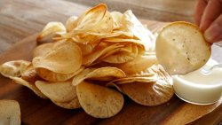
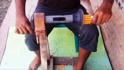
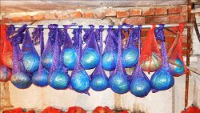
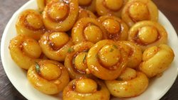
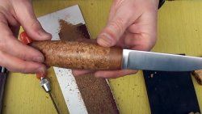

Вкуснейшие картофельные чипсы БЕЗ масла и жарки
Кулинария
Хрустящие чипсы давно вошли в жизнь любителей быстро перекусить или просто порадовать себя необычными вкусами. Но не всегда мы знаем, что конкретно входит в состав той или иной продукции. Предлагаем вам самостоятельно приготовить домашние
Как сделать мощную дым-машину 4,5 кВт
Электроника
Все видели маленькие дымовые машины в танцевальных клубах, барах и дискотеках. Они действительно испускают приятные клубы дыма, но производительность их невелика – едва хватает для небольшого зала. Мы будем делать дымового монстра мощностью 4,5 кВт.

Как сделать простой кукурузный шелушитель
Полезное и интересное
Шелушение кукурузных початков просто руками не очень производительное занятие, отнимающее много сил. Сделав довольно простой по конструкции кукурузный шелушитель, эту работу можно значительно ускорить и при этом совершенно не утомиться.

Секреты зимнего хранения урожая
Сад и огород
Этот мастер-класс начинается в подвале. В подполе. И посвящен он зимнему хранению овощей: моркови, свёклы, капусты. Делимся опытом, передаём его другим. Подвал и погреб – это совершенно разные вещи. Подвал – это такое техническое сооружение, в

Без грибов! Обалденное блюдо из обычного картофеля
Кулинария
Картофель подают в разном виде – жареным, вареным, тушеным, в качестве пюре и т. д. Но хочется предложить вам попробовать еще одно необычное блюдо. В виде грибов, но со вкусом картошки. Практически невозможно догадаться внешне, из чего оно

Как идеально обойти трубу ковролином или линолеумом
Строительство и ремонт
И зачем только мы изучали геометрию в школе? Ведь в жизни она нам никогда не пригодится! Ошибаетесь! Ещё как пригодится. А где? Ответ на это даёт ролик из Интернета, который мы и рассмотрим поподробнее. Речь пойдёт о подрезке напольных покрытий:
8 полезных лайфхаков по применению кабельных стяжек в домашнем хозяйстве
Полезное и интересное
Кабельные стяжки (пластиковые хомуты или стрипы) сегодня широко распространены из-за своей надежности, прочности и стойкости. Обычно это изделия одноразового применения и стоят недорого. Поэтому на них мало обращают внимания.
Как приготовить свиную грудинку по рецепту из ресторана
Кулинария
Приготовить свиную грудинку не так-то просто. С одной стороны, она достаточно жирная и не подходит для самостоятельного блюда. С другой стороны, если готовить ее неправильно, она может стать сухой и жесткой. Предлагаю вам один из самых любимых мной

Как сделать рукоять ножа из пробока
Полезное и интересное
Не надо объяснять, насколько важен на кухне острый нож с удобной и нескользкой рукоятью. Также такой нож незаменим в походе, на рыбалке или охоте. Сделать такую рукоять для ножа, топорика, спиннинга или зимней удочки можно из пробок из-под